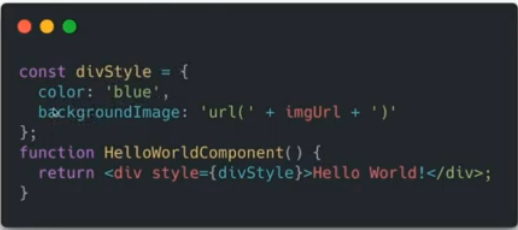
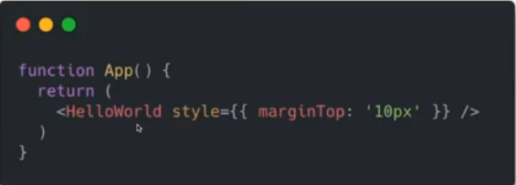
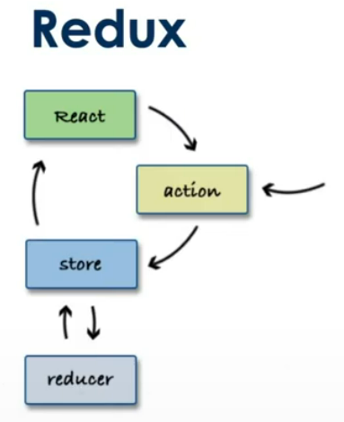
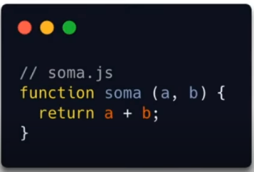
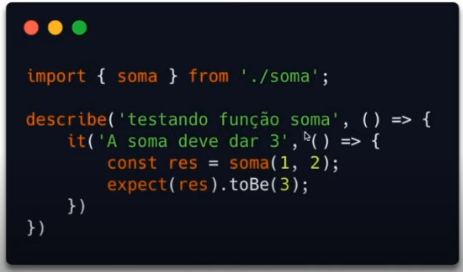
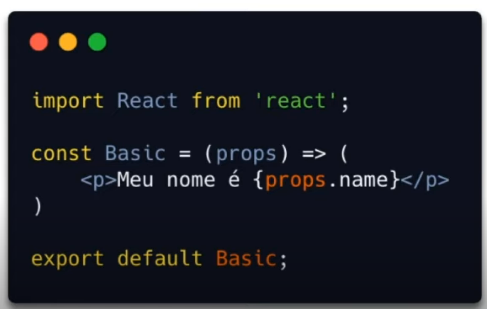
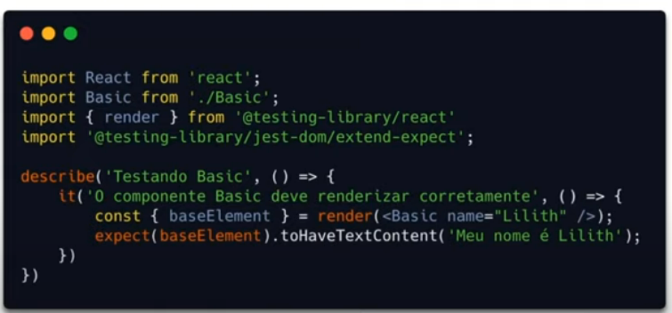

Há três maneiras de estilizar elementos no ReactJS.
Exs.:
 Vantagens
Desvantagens
Vantagens
Desvantagens
O próprio JavaScript gera CSS para nós. O método mais utilizado é através do styled-components
Vantagens
Stateful usa estados, ou seja, tem o useState no código; stateless não utiliza.
Select, input ou textarea aceitam o atributo value e nós podemos mudá-lo usando o atributo onChange. Os estados são utilizados para definir as ações do projeto.
Usado para inputs read-only, como envio de arquivos. O react orienta usar todos o máximo de componentes controlados possível.
É possível usar bibliotecas de form para facilitar o trabalho no REACT. A Formik e o Redux-forms são as mais populares.
É uma arquitetura para comunicação entre componetes React. É um padrão de projeto para tráfego de dados de maneira unidirecional.
Formata a mensagem a ser enviada. Quando precisamos alterar um estado a action formata a mensagem.
Entrega a mensagem dada pela action à callback correta.
Guarda todos os estados e faz as as alterações.
"Middleware" entre a store e a tela, vê as alterações e solicita a atualização da tela (o react por exemplo é a camada de view).
Redux é implementação mais popular de flux.
Criado por Dan Abramov e Andrew Clark em 2015.
Diferentemente do flux raíz, não tem o dispatcher e tem também o componente chamado de reducer. A camada de view no esquema foi chamada de React.
No flux tem várias stores. No redux apenas um. O State é read-only e as mudanção são feitas por pure functions (estado imutável).
São como as do flux, mas com uma direrença, não enviam a action ao dispatcher (que não existe), mas retornam um objeto action formatado.
Cuida de toda a árvore de estados.
Pega o estado da store e o divide para pequenos reducers descobrirem como lidar com ele.
Utilizando o React temos 3 conceitos de conexão da view com o store
É preciso dar npm i react-redux e npm i --save-dev redux-devtools para trabalhar com o redux no react. Nós também temos que instalar a extensão Redux DevTools
O professor usou o projeto contador da aula 2, além do index.js e a pasta redux da src.
Podemos ver no projeto da aula a utilização do provider, actions, reducers, connect, entre outros conceitos passados nas aulas desta seção de redux.
Ao clicar nos botões nós podemos abrir o inspetor do google e ir na aba Redux para fazer a análise do react.
Nativamente nós temos o fetch api e tem a lib externa axios.
Servem para conectar um ou mais servidores HTTP. Têm os seguintes métodos:
A fetch api é uma alternativa ao XMLHttpRequest() ao jQuery.ajax(). Suporte a service workers. Não envia ou recebe cookies. Não rejeito o status do erro HTTP (nem se for 404, nem 500).
A resposta inicial do fetch é por padrão uma promise pending, portanto, temos que passar duas then, sendo que a primeira nós parseamos para json a resposta.
No exemplo de delete e de put, api tem que estar configurada para conseguir acessar os dados pela url.
É cross-browser, pois é baseada no XMLHttpRequest(). Pode monitorar o processo de um request. Melhor tratamento de erros e testes.
Para usar o axios tem que instalar por npm ou yarn.
No axios, como pode ser visto no exemplo do get, a promise já vem resolvida, então conseguimos já pegar o dado ou tratar o erro.
fetch-api .get (linha 22).
Coleção é uma unidade ou um conjunto (um array).
Usar imutabilidade é importante para ganho de performance. Podemos ter isso com o uso do shouldComponentUpdate ou React.PureComponent
O virtual DOM só vai atualizar o componente quando houver alteração do estado do componente. Utilizando estruturas imutáveis temos controle sobre a rerenderização
Imutabilidade é você criar cópias das variáveis que você quer usar, mas não apenas usar referências, mas sim o spread, por exemplo. O professor também sugeriu a biblioteca Immutable.js, além da Immer, Immutability-helper, Seamless-immutable.
A imutabilidade é pré-requisito no Redux. Redux e react-redux utilizam comparações rasas. O reducer divide a store e o combine reducer checa as mudanças de forma asa, fazendo a interação dos reducers e cria uma nova store a partir desses reducers. Cada um dos componentes é verificado se houve mudanças, caso haja esse componente atualizado é carregado no novo objeto de store.
connect gera componentes que fazem comparação rasa com o estado root. Também faz a verificação de necessidade de re-render.
Redux middlwares são usados como camadas entre o disparo de uma ação e o momento que ela atinge o reducer.
Sua criação é bem complexa. Nós podemos usar as libs redux-thunk e redux-saga.
Exemplo reducers"Tópico 3" = Arquivo de fetch (dispatcher) e a forma final de como conectar a app no React-Redux.
Test-Driven Development (desenvolvimento orientado a testes). Tem por objetivo escrever um código para testar códigos, para antecipar erros a nível de desenvolvimento. Geralmente escrito antes da escrita da funcionalidade.
Primeiro cria-se um código de teste para a funcionalidade que irá quebrar, e depois criamos a funcionalidade. Depois criamos um teste que irá passar e refatoramos.
No teste unitário testa-se as unidades, ou seja, uma função, componente, serviço ou página.
e2e é ponta a ponta, testa o fluxo.
Ferramentas e maneiras diferentes de fazer o unitário e o e2e.
Num teste unitário no jest, nós chamamos o método nativo "describe" que recebe uma string descrevendo o que é o teste e uma função anônima que por sua vez executa o método it que também recebe uma string de descrição indicando o que queremos que aconteça e uma função anônima que executará uma chamada da função que queremos testar (passando seus argumentos ou não) e o método expect que recebe a função chamada e o que deve acontecer para o teste passar. Ex:
 É importante fazer o teste antes da escrita da funcionalidade para que esta funcionalidade já seja escrita de modo a suportar testes.
Para fazer esses testes no React podemos usar o jest (que já vem embarcada no create-react-app), react-testing-library, shallow, enzyme, chai, mocha, selenium, puppeteer (roda em cima do browser).
Para testar componentes em react temos que usar a react-testing-library, instalando @testing-library/react e @testing-library/jest-dom-extend-expect como --dev
 No exemplo, baseElement é algo relacionado ao render, não ao teste em si.